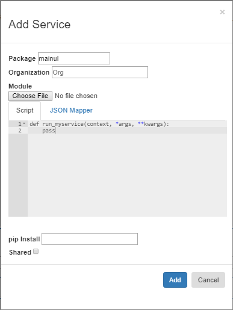
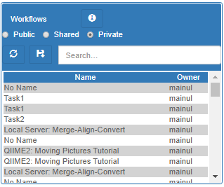

VizSciFlow is a workflow management system with a domain-specific language (DSL).
The DSL has simple syntax and a minimal set of keywords. The syntax has similarities to python’s syntax and indenting.
Scientists can write a workflow script using the visual elements offered in VizSciFlow web interface.
| Construct | Keywords | Example |
|---|---|---|
| Conditional | if | |
| Iteration | for ... in | |
| Parallelization | parallel ... with | |
| Subworkflow | task | |
| An anonymous task without name is called at once. Named tasks are called from somewhere else. |
Like Python, VizSciFlow is structured with indentation i.e. the statements within a block line up vertically. The block ends at a line less indented or the end of the file. If a block has to be more deeply nested, it is simply indented further to the right.
Here is a VizSciFlow indenting example:
task AlignSequences(ref, data, data2):
CheckQuality(data)
CheckQuality(data2)
data = pear.Merge(data, data2)
data = bwa.Align(ref, data)
data = SamToBam(data)
return data
AlignSequences('/public/genomes/Chr1.cdna', '/public/MiSeq_SOP/F3D6_S194_L001_R1_001.fastq', '/public/MiSeq_SOP/F3D6_S194_L001_R2_001.fastq')
VizSciFlow is a dynamic language. The type of a literal is inferred from the value. For example:
| Integer | i = 10 |
| Float | f = 10.0f |
| Text | s = "Hello World!" |
This is the left-top panel of the user interface. It lists all the data items available from different file systems (posix, galaxy, hdfs). The public folder of each file system is available to all users for read access. Another folder named as username is available for read-write accesses. The generated files during workflow execution are usually found in this folder.

To insert a data item into the code editor, first remove the argument name from the service call and then click right button on the item and select "To Editor".
Sometimes, you may need to insert the selected data item in the arguments box. Right click on the selected item and press "To args" context menu item.

The services/tools for the workflows are listed on the right-top corner of the UI. There are 3 different access modes for the service.
Experienced users can extend the capabilities of the system by adding new services to it. They can write a new python module or call external program from python code.
In the service pane, the "+" button opens the dialog for Service Mapping. There is a coding tab to write the service code and a JSON tab to map the python code with DSL vocabulary. Here is a lean and thin service code: 
def run_myservice(context, *args, *kwargs):
return args[0] + args[1]
{
"functions": [
{
"org": "srlab",
"package": "mylib",
"module": "app.biowl.libraries.users.mainul.mylib",
"group": "Arithmetic",
"name": "MyService",
"internal": "run_myservice",
"desc": "Adds two numbers and returns the sum.",
"returns": "number",
"example": "data = mylib.MyService(x, y)",
"params": [
{
"name": "x",
"type": "number",
},
{
"name": "y",
"type": "number"
}
]
}
]
}
The right-bottom panel lists the saved workflows of the system. Workflows can be public, private or shared. New workflows can be saved by clicking the "+" button.
The left-bottom panel lists all the workflow instances run by this user. You can stop currently running workflows.

Newer jobs are shown on the top. Jobs which were modified in the last 5 minutes are shown red colored.
Double click an item to display the status information of workflow execution.
If you check a single running job, the incremental execution status of each step is shown on the report viewer.